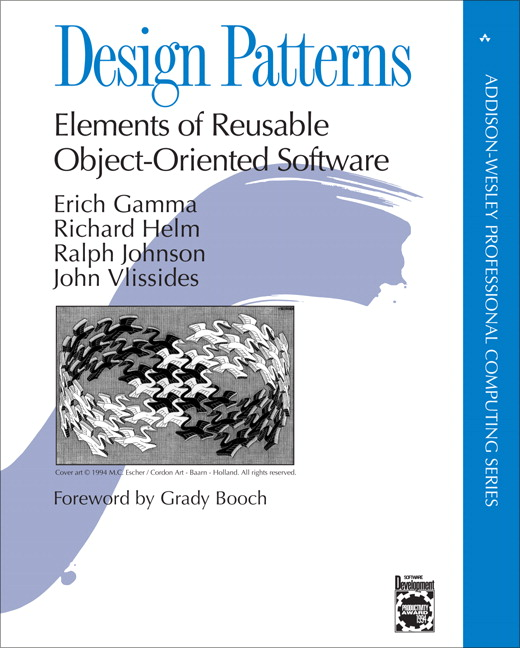
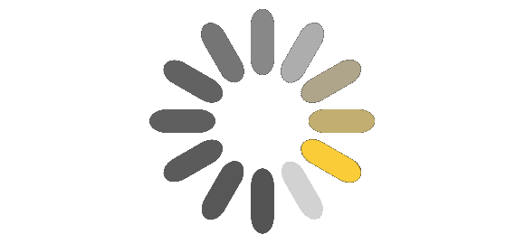

Hello!
 Marco Pivetta
Marco Pivetta
Ocramius


(And we love <marquee/>)
Awesome:
 octrine team
octrine team
contributor

 Ocramius
Ocramius
Current projects
ProxyManager, BjyAuthorize, AssetManager, ZeffMu, ZfrRest, OcraDiCompiler, OcraServiceManager, OcraCachedViewResolver, DoctrineModule, DoctrineORMModule, DoctrineMongoODMModule, VersionEyeModule
WHY?
The Proxy Pattern
in PHP
What is a Proxy?
A proxy is a class functioning as an interface to something else
(carefully pasted from wikipedia)
Simple put
A Proxy implements a Subject's interface
A proxy replaces subject thanks to the LSP

Client consumes SubjectInterface

Client consumes RealSubject

Client consumes SubjectProxy

Simplified:
SubjectProxy extending RealSubject
class SubjectProxy extends RealSubject { /* ... */ }

Though you should use interfaces!
What do Proxies do?
Some definitions here:
And here:
And a lot of confusion over the internets :(
From the GoF
Remote proxy
Virtual proxy
Protection proxy
Smart reference
I'm a software architect
Let's get practical!
Remote Proxy


Remote Object example
class Tweet {
protected $data;
public function __construct(array $data) {
$this->data = $data;
}
public function getText() {
return $this->data['text'];
}
}class TweetProxy extends Tweet {
protected $api;
protected $id;
public function __construct(TwitterApi $api, $id) {
$this->api = $api;
$this->id = $id;
}
public function getText() {
return $this->api->getTweetText($this->id);
}
}$tweet = new Tweet(array('text' => 'Proxies in PHP!'));
var_dump($tweet->getText()); // Proxies in PHP!
$api = new TwitterApi(/* yadda */);
$remoteTweet = new TweetProxy($api, 280643708968386560);
var_dump($remoteTweet->getText()); // Tweet text!
$remoteTweet = new TweetProxy($api, 280643708968386561);
var_dump($remoteTweet->getText()); // Another text!remote object pros/cons
Share objects across multiple systems
No local memory usage
Can act as an adapter for a completely different remote object
Complex setup
Fails on adapter failure
As slow as the protocol
Lazy Loading
For very expensive objects:
- DB Connections
- Files (I/O in general)
- Large objects (memory)
- Objects with long instantiation time (hashes/parsed values/etc)
(A pattern, not a proxy type)
Lazy Loading example
class Customer {
public function __construct(DbConnection $db, $id) {
$this->db = $db;
$this->id = $id;
}
public function getName() {
$this->init();
return $this->data['name'];
}
private function init() {
if (!isset($this->data)) {
$this->data = $this->db->load($this->id);
}
}
}Problems with Lazy Loading
Instantiation logic mixed with class logic
Dependency to loader objects in the object
Not really optimized, and unreadable if optimized
Harder to test
Lazy loading via Proxies
Virtual Proxy
An object that looks like the RealSubject, but just holds a lazy reference to it.
Ghost Object
An object that looks like the RealSubject, but with all properties not being
set and being lazy loaded.
Virtual Proxy
class Image {
protected $image;
public function __construct($path) {
$this->image = imagecreatefromjpeg($path);
}
public function getSize() {
return array(
imagesx($this->image),
imagesy($this->image),
);
}
}class ImageVirtualProxy extends Image {
protected $wrapped;
public function __construct($path) {
$this->path = $path;
}
public function getSize() {
$this->init();
return $this->wrapped->getSize();
}
private function init() {
if ( ! $this->wrapped) {
$this->wrapped = new Image($this->path);
}
}
}$img1 = new ImageProxy('/path/to/image1.jpg');
var_dump(memory_get_usage()); // ~200Kb
$img2 = new ImageProxy('/path/to/image2.jpg');
var_dump(memory_get_usage()); // ~200Kb
$img3 = new ImageProxy('/path/to/image3.jpg');
var_dump(memory_get_usage()); // ~200Kb
$size1 = $img1->getSize();
var_dump(memory_get_usage()); // ~4Mb
$size2 = $img2->getSize();
var_dump(memory_get_usage()); // ~8MbVirtual Proxy pros/cons
Abstracts initialization logic away
Improved memory/performance impact
Low overhead
Easy to implement
Not optimal for data that is always loaded
Lazy loading means lazy failing
Actually, not the same object as RealSubject (different identity)
Ghost Object
An object whose properties are the same of the proxied object, but null.
Accessing any method causes loading of the properties.
Useful when the identity of the object has to be preserved
Doctrine Proxies are generated this way.
Ghost Object (simplified) example
class ImageGhostProxy extends Image {
protected $initialized = false;
public function __construct($path) {
$this->path = $path;
}
public function getSize() {
$this->init();
return parent::getSize();
}
private function init() {
if ( ! $this->initialized) {
$image = new Image($this->path);
$this->image = $image->image;
$this->initialized = true;
}
}
}Ghost Object pros/cons
Same identity as RealSubject
Abstracts initialization logic away
Improved memory/performance impact
Low overhead
Harder to implement
May require reflection to access parent class's properties
Not optimal for data that is always loaded
Lazy loading means lazy failing
Protection proxy
A Protection Proxy comes into play when you want to transparently limit access to an API through a set of rules (ACL/limits/custom logic).
It actually is a decorator to the proxied RealSubject.
class APIProtectionProxy extends API {
protected $count = 0;
public function __construct(API $api, $limit) {
$this->api = $api; $this->limit = $limit;
}
public function doStuff() {
$this->count();
return $this->api->doStuff();
}
private function count() {
if (++$this->count > $this->limit) {
throw new RemoteApiLimit('STAHP!');
}
}
}$api = new APIProtectionProxy(new API(/* ... */), 50);
while (true) {
$api->doStuff(); // RemoteApiLimit exception!
}Protection Proxy pros/cons
Limiting access to an API does not require changes in the API
Modifies proxied object behavior
Smart reference
A Smart reference executes additional operations when the RealSubject is accessed
Smart reference is actually DecoratorPattern
Good for AOP
Smart reference use cases
- Caching slow method execution
- Logging
- Event triggering
- Mocking
- AOP in general
Smart reference example
Let's cache a complex/slow method call
/** @AOP\Cache(ttl=3600) */
public function doHeavyStuff() {
// [...]
}Could become:
class APICachingProxy extends API {
public function __construct(API $api, Cache $cache) {
$this->api = $api; $this->cache = $cache;
}
public function doHeavyStuff() {
if ($cached = $this->cache->get('doHeavyStuff')) {
return $cached;
}
$result = $this->api->doHeavyStuff();
$this->cache->set('doHeavyStuff', $result, 3600);
return $result;
}
}Implementing a Proxy in PHP
Poor coder's proxy implementation:
class MyProxy {
// ...
public function __call($method, $args) {
return call_user_func_array(
$this->someWrappedStuff,
$args
);
}
}
class BankAccount { /* ... */ }function pay(BankAccount $account) { /* ... */ }class PoorProxy {
public function __construct($wrapped) {
$this->wrapped = $wrapped;
}
public function __call($method, $args) {
return call_user_func_array(
$this->wrapped,
$args
);
}
}$account = new PoorProxy(new BankAccount());
pay($account); // KABOOM!Implementing a
(generic) Proxy
1. MUST respect the LSP!
2. Not so trivial!
PHP is a maze!
- magic getters
- magic setters
- serialization
- cloning
- public properties
A lot of stuff to consider!
Proxies are NOT nice:
<?php
namespace Proxy\__PM__;
class A extends \A
{
private $valueHolder;
private $initializer;
public function getFoo()
{
$this->initializer && $this->initializer->__invoke($this->valueHolder, $this, 'getFoo', array(), $this->initializer);
return $this->valueHolder->getFoo();
}
public function __construct($initializer)
{
unset($this->foo);
$this->initializer = $initializer;
}
public function __get($name)
{
$this->initializer && $this->initializer->__invoke($this->valueHolder, $this, '__get', array('name' => $name), $this->initializer);
return $this->valueHolder->$name;
}
public function __set($name, $value)
{
$this->initializer && $this->initializer->__invoke($this->valueHolder, $this, '__set', array('name' => $name, 'value' => $value), $this->initializer);
$this->valueHolder->$name = $value;
}
public function __isset($name)
{
$this->initializer && $this->initializer->__invoke($this->valueHolder, $this, '__isset', array('name' => $name), $this->initializer);
return isset($this->valueHolder->$name);
}
public function __unset($name)
{
$this->initializer && $this->initializer->__invoke($this->valueHolder, $this, '__unset', array('name' => $name), $this->initializer);
unset($this->valueHolder->$name);
}
public function __clone()
{
$this->initializer && $this->initializer->__invoke($this->valueHolder, $this, '__clone', array(), $this->initializer);
$this->valueHolder = clone $this->valueHolder;
}
public function __sleep()
{
$this->initializer && $this->initializer->__invoke($this->valueHolder, $this, '__sleep', array(), $this->initializer);
return array('valueHolder');
}
public function __wakeup()
{
unset($this->foo);
}
public function setProxyInitializer(\Closure $initializer = null)
{
$this->initializer = $initializer;
}
public function getProxyInitializer()
{
return $this->initializer;
}
public function initializeProxy()
{
return $this->initializer && $this->initializer->__invoke($this->valueHolder, $this, 'initializeProxy', array(), $this->initializer);
}
public function isProxyInitialized()
{
return null !== $this->valueHolder;
}
public function getWrappedValueHolderValue()
{
return $this->valueHolder;
}
}Introducing ProxyManager
Avoid bringing out the generated garbage yourself!
(Currently) deals with Virtual Proxies, Smart References, Null Objects, Ghost Objects and Remote Objects
Virtual Proxy with ProxyManager
namespace My\Slow;
class Foo
{
public function __construct()
{
sleep(10);
}
public function doFoo()
{
echo 'foo!';
}
}require_once 'vendor/autoload.php';
use ProxyManager\Factory\LazyLoadingValueHolderFactory;
$factory = new LazyLoadingValueHolderFactory();
$proxy = $factory->createProxy(
'My\Slow\Foo',
function (& $wrappedObject, $proxy) {
$wrappedObject = new My\Slow\Object();
$proxy->setProxyInitializer(null);
}
);
$proxy->doFoo();Smart Reference with ProxyManager
require_once 'vendor/autoload.php';
use ProxyManager\Factory\AccessInterceptorValueHolderFactory;
$factory = new AccessInterceptorValueHolderFactory();
$db = $factory->createProxy(
new \My\Db\Connection(),
['query' => function () {
echo "Query being executed!\n";
}],
['query' => function () {
echo "Query completed!\n";
}]
);
$db->query();Yes, I'm no good at naming classes - really.
Integrates with
Symfony2
and
Zend Framework 2
Virtual (Service) Proxies + Zend Framework 2
return [
'service_manager' => [
'delegators' => [
'MyServiceName' => ['LazyServiceFactory']
],
],
'lazy_services' => [
'map' => ['MyServiceName' => 'My\Service\ClassName']
]
]Virtual (Service) Proxies + Symfony 2
<services>
<service
id="MyServiceName"
class="My\Service\ClassName"
lazy="true"
/>
</services>Some useful libraries
Proxies and AOP
Uses proxies for AOP purposes
Very interesting usage of autoloaders!
And before we get to the dirty stuff...
Questions?
Proxying Fluent Interfaces
Breaks Virtual Proxies, Protection Proxies, and Smart References
More important:
Possible broken Encapsulation!
class BankAccount {
protected $amount = 0;
public function pay($amount) {
$this->amount -= $amount;
return $this;
}
}$account = new BankAccount();
$account->pay(100)->pay(200)->pay(300);
Caution!
Dirty hacks!
class BankAccountProxy extends BankAccount {
public function __construct(BankAccount $wrapped) {
$this->amount = & $wrapped->amount;
}
public function pay($amount) {
echo 'Paid ' . $amount . "!\n";
return parent::pay($amount);
}
}$account = new BankAccountProxy(new BankAccount());
$account->pay(100)->pay(200)->pay(300);
Paid 100
Paid 200
Paid 300Public properties proxying
(without property accessors!)
class Customer {
public $name;
public $surname;
}Caution!
Dirty hacks!
class Customer {
public $name;
public $surname;
}class CustomerProxy extends Customer {
public function __construct(Customer $customer) {
unset($this->name, $this->surname);
$this->customer = $customer;
} public function __set($name, $value) {
$this->customer->$name = $value;
}
public function __get($name) {
return $this->customer->$name;
}
// __isset, __unset
}